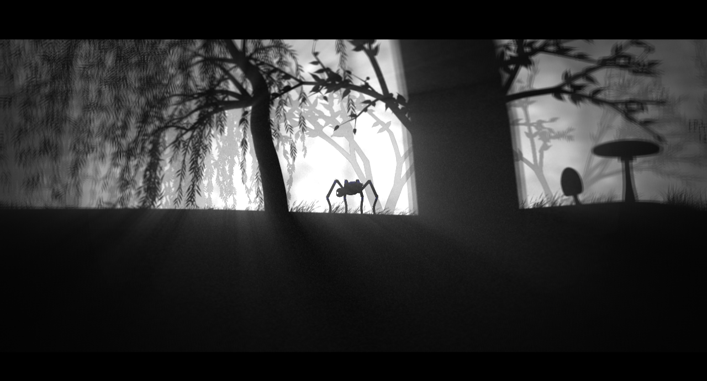

Bound

What is Bound?
Bound is a story driven 2D jump'n'run that I started developing as a university project with a bunch of colleagues and now continue as a side project.
Since it will be context of some blog posts (edit 2021, that never happened), I thought it would be nice to see a picture of that thing.
We implemented that thing with XNA 4.0, added Farseer Physics, Mercury Particles, Irrklang Audio and ... not, that's it.
The engine was done from scratch. We have animation classes, physics objects, a generic layer system, a bunch of effects, game state and a very nifty editor
for developing levels, scripting game logic and so on.
Our artists served us graphics, storyboards and render sequences telling the story of the game.
Our latest achievements are implementing Lua hooks and some sweet effects, such as god rays.
Those are visible in the picture above and I will probably write about their implementeation in the next post (edit 2021, that never happened).
Ah, I nearly forgot. You are playing as the itzy bitzy spider that can be seen above. Animations are impressive, maybe I will give a video somewhen (edit 2021, that never happened, I don't have any of them anymore :().